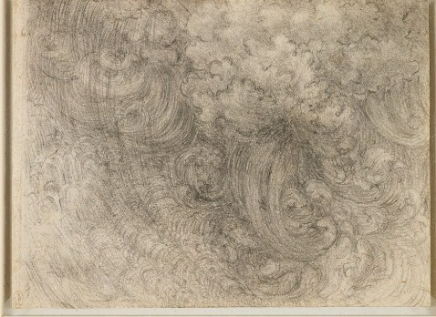

Late in his life, Leonardo became obsessed with one image: a world-ending storm. He filled page after page with swirling drawings of wind and water tearing a landscape apart. And he wrote instructions, to himself and to other painters, for how to capture a flood so enormous it swallows everything. This is how he described it:
In his own words
Let the dark and gloomy air be seen buffeted by the rush of contrary winds and dense from the continued rain mingled with hail and bearing hither and thither an infinite number of branches torn from the trees and mixed with numberless leaves.
In his own words
All round may be seen venerable trees, uprooted and stripped by the fury of the winds; and fragments of mountains, already scoured bare by the torrents, falling into those torrents and choking their valleys till the swollen rivers overflow and submerge the wide lowlands and their inhabitants.
In his own words
Again, you might have seen on many of the hill-tops terrified animals of different kinds, collected together and subdued to tameness, in company with men and women who had fled there with their children.

Notice how he builds the scene like a movie director: the sky first, then the trees, then the mountains crumbling, then the tiny frightened figures on the hilltops. Every sentence zooms in. And in the middle of all that chaos, he noticed something strange and almost tender:
In his own words
Nor was there any object lighter than the water which was not covered with a variety of animals which, having come to a truce, stood together in a frightened crowd--among them wolves, foxes, snakes and others--fleing from death.
Even the predators and their prey, wolves, foxes and snakes, stop hunting each other when the water rises. In Leonardo's flood, fear makes a truce that nothing else could.
Words to know
- torrent
- a fast, powerful rush of water
- venerable
- old and respected
- subdued
- made calm and quiet, here by fear
- truce
- an agreement to stop fighting
Try it
Optional. For after your session with Rocky, on your own time. Ask a grown-up before you use any website.
- Jar whirlpool: fill a clear jar about three-quarters with water, add one drop of dish soap, swirl it fast, and watch the funnel form. Leonardo spent years drawing water just like this.
- Draw your own storm using his ingredients: dark air, contrary winds, hail, torn branches, uprooted trees, falling mountains, flooded valleys and frightened animals.